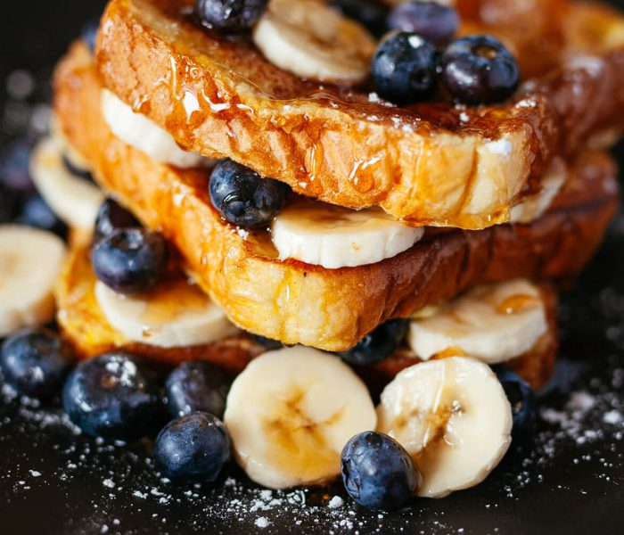

Too Much Chocolate Cake
This rich, moist chocolate cake is a chocolate lover’s dream! Perfect for birthdays, celebrations, or any time you crave something sweet and decadent.
Ingredients
- 1 package devil's food cake mix
- 1 package instant chocolate pudding mix
- 1 cup sour cream
- 1 cup vegetable oil
- 4 large eggs
- 1/2 cup warm water
- 2 cups semisweet chocolate chips
Instructions
- Preheat oven to 175°C (350°F). Grease and flour a Bundt pan.
- In a large bowl, mix together the cake and pudding mixes, sour cream, oil, eggs, and water.
- Stir in the chocolate chips and pour batter into prepared pan.
- Bake for 50–55 minutes, or until top is springy to the touch and a wooden pick comes out clean.
- Cool cake thoroughly in pan for 1 hour before inverting onto a plate. Dust with powdered sugar if desired.

Creamy Alfredo Pasta
A classic Italian pasta tossed in a rich, creamy Alfredo sauce. Quick, easy, and perfect for weeknight dinners.
Ingredients
- 400g fettuccine pasta
- 1 cup heavy cream
- 1/2 cup butter
- 1 cup grated Parmesan cheese
- 2 cloves garlic, minced
- Salt & pepper to taste
- Chopped parsley (for garnish)
Instructions
- Cook pasta according to package instructions. Drain and set aside.
- In a pan, melt butter and sauté garlic until fragrant.
- Add cream and simmer for 2 minutes. Stir in Parmesan until melted.
- Toss pasta in sauce, season, and garnish with parsley. Serve hot.

Avocado Toast
Crunchy toast topped with smashed avocado, cherry tomatoes, and herbs. A healthy and delicious breakfast or snack.
Ingredients
- 2 slices whole grain bread
- 1 ripe avocado
- 6 cherry tomatoes, halved
- Salt & pepper to taste
- Fresh herbs (parsley or cilantro)
Instructions
- Toast the bread slices to your liking.
- Mash avocado, season, and spread on toast.
- Top with tomatoes and herbs. Serve immediately.